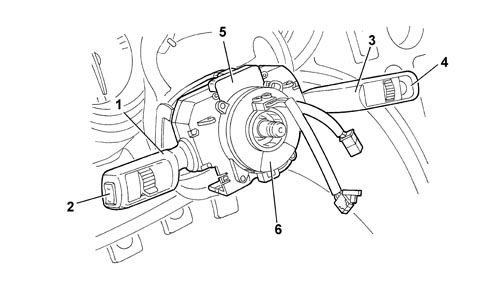
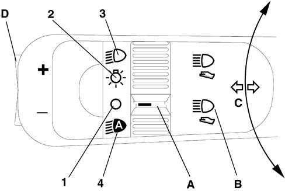
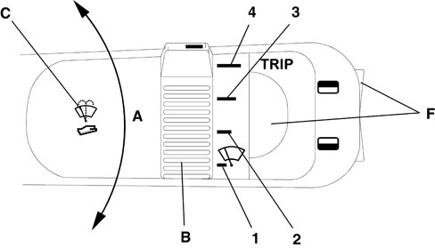
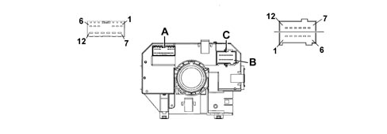
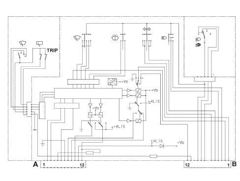

STEERING COLUMN SWITCH UNIT MODULE
Introduction
The steering column switch unit basically groups the following functions together:

1. Lever for exterior lights and direction indicators
2. MODE buttons
3. Lever for windscreen washing and wiping functions
4. TRIP function buttons
5. Steering angle sensor
6. Clock spring
The steering column switch unit module is composed of a maximum of three levers (lights, wiper and Cruise Control), an electronic module (that manages the motor for the windscreen wipers and the windscreen washer pump; a steering angle sensor a clock spring that produce the connection with the steering wheel.
In addition - if a rain/dusk sensor is fitted - the module is equipped with an A-BUS interface.
Operation
Left lever

A - Lights selector
B - Lights flasher - main beam headlamps switch
C - Direction indicators
D - MODE button
LIGHTS SELECTOR
The selector is a ring nut with 3 or 4 (with a dusk sensor) stable positions located at the end of the lever and it is activated by turning it along the axis of the lever (3 positions without a dusk sensor, 4 positions with a dusk sensor).
- Pos. 1 = No circuit operated
- Pos. 2 = Side lights
- Pos. 3 = Dipped headlamps
- Pos. 4 = Auto function for side lights and dipped headlamps

|
Side lights and dipped headlamps signals Two signals (earth) are sent "Light 1 "Light 2" from the steering wheel stalk unit to the Body Computer that manages both side lights and dipped headlamps in manual or AUTO mode (automatic dusk sensor activation). The side lights are activated in manual mode when the Light 1 signal is not present and the Light 2 signal is present. The dipped headlamps are activated in manual mode when the Light 1 signal is not present and the Light 2 signal is not present either. The lights are activated in AUTO mode when the Light 1 signal is present and the Light 2 signal is not present. If both signals are present, the lights are permanently off. |
LIGHT FLASHER - MAIN BEAM HEADLAMPS SWITCH
The "light flasher" control is operated by puling the stalk from rest position towards the steering wheel; the operation is unstable i.e. the stalk returns to the rest position when released.
The "fixed main beam headlamps" command is produced by pulling the lever in the same way as for the flasher but making it complete a greater travel, as far as the second position ("main beam headlamps" contact).
To switch the main beam headlamps off, the lever must be pulled to the main beam position in the same way as for switching them on.
TURN SIGNAL CONTROL
The command is produced by moving the lever on the steering wheel plane in both directions, upwards for the right direction indicators and downwards for the left ones.
The lever has two distinct activating modes: one unstable one known as "changing lane" and one stable one known as "changing direction".
The unstable activation on the release of the lever reopens the electrical contact that has closed.
The unstable activation has an automatic release device that returns the lever to the rest position when the manoeuvre is completed (rotation of the steering wheel in the same direction as the lever).
MODE KEYS
By pressing the MODE button on the left lever the relevant commands are sent to the instrument panel.
In addition, there is a rocker switch at the end of the lever with one stable position and 2 unstable positions: UP- OFF - DOWN.
Right lever

A - Windscreen wiper;
B - Windscreen wiper intermittent operation / rain sensor setting (if present) selector;
C - Windscreen washer;
D - Rearscreen wiper; (station wagon only)
E - Rearscreen washer (station wagon only)
F - TRIP buttons
WINDSCREEN WIPER CONTROL
The windscreen wiper is operated by moving the lever along the plane of the steering wheel.
There are 5 different activation positions, from the bottom, in order:
- Antipanic (unstable)
- OFF
- Intermittent / Automatic
- Continuous 1st speed
- Continuous 2nd speed
WINDSCREEN WIPER INTERMITTENT SELECTOR (RAIN SENSOR SETTING)
The adjustment takes place by turning the ring nut into 4 stable positions.
4 different pause times for the intermittent operation of the windscreen wiper correspond to these positions.
If a rain sensor is fitted, the positions correspond to the 4 rain sensor settings.
- Pos. 1: MAX pause (MIN setting)
- Pos. 2: Medium - high pause (setting 2)
- Pos. 3: Medium - low pause (setting 3)
- Pos. 4: MIN pause (MAX setting)
WINDSCREEN WASHER CONTROL
The control for activating the two-way pump for washing the front windscreen is produced by pulling the lever towards the steering wheel crown; the activation is unstable.
REARSCREEN WIPER CONTROL (IF FITTED)
The rearscreen wiper is controlled by rotating a ring nut in 2 stable positions halfway along the lever.
REARSCREEN WASHER CONTROL (IF FITTED)
The control for activating the two-way pump for washing the rearscreen is produced by pulling the lever towards the dashboard; the activation is unstable.
TRIP BUTTONS
By pressing the unstable TRIP button on the lever, the relevant commands are sent to the instrument panel. In addition, there is a rocker switch at the end of the lever with one stable position and 2 unstable positions: UP- OFF - DOWN.
Cruise control lever
See
See descriptions 5580A CRUISE CONTROL SYSTEM
Components
Wiper motor electronics
The electronics for controlling the windscreen and rearscreen wiper and washer functions are housed inside the steering column switch unit and are capable of controlling the (two speed) windscreen and rearscreen wiper motors and the two-way pump.
By means of the A-BUS interface it is capable of conversing with the rain sensor and, as a result, of controlling the windscreen wiper in automatic mode (refer to the A-BUS serial network and the rain sensor).
For more details on the wiping logic,
See descriptions 5050 SCREEN WASHER AND HEADLAMP WASH/WIPE
Electrical connections

Steering column switch unit pin out
Connector A (front wiring)
|
1 |
n.c. |
|
2 |
A-bus serial line (signal from rain sensor) |
|
3 |
Positive signal from reverse gear |
|
4 |
Negative signal from switch signalling rearscreen open (station wagon only) |
|
5 |
Headlamp washer / wish-wash signal enablement |
|
6 |
Negative signal from windscreen wiper motor cam |
|
7 |
Power earth |
|
8 |
Second winscreen wiper speed |
|
9 |
First windscreen wiper speed |
|
10 |
Two-way pump (positive for rear washer) |
|
11 |
Windscreen wiper/pump power supply |
|
12 |
Two-way pump (positive for windscreen washer) |
Connector B - C (dashboard wiring)
|
1 |
Rearscreen wiper motor power supply (station wagon only) |
|
2 |
Rearscreen wiper cam signal (station wagon only) |
|
3 |
High beam negative control |
|
4 |
Light flasher negative control |
|
5 |
Negative signal controlling right turn signals/parking lights |
|
6 |
Negative signal controlling left turn signals/parking lights |
|
7 |
Light 1 control |
|
8 |
Light 2 control |
|
9 |
Signal earth |
|
10 |
Analogue signal from "Mode, -, +" controls |
|
11 |
Analogue signal from "Trip, up, down" controls |
|
12 |
Rearscreen wiper power supply (station wagon only) |
Steering column switch unit wiring diagram

CLOCK SPRING
The clock spring transfers the electrical signal to controls on the steering wheel (horn and other optional controls) and connects the airbag module without risk of breakage.
For more details,
See descriptions 5580C AIR BAG SYSTEM
Steering Angle Sensor
The steering angle sensor is fitted in the clock spring, see
See descriptions 3350